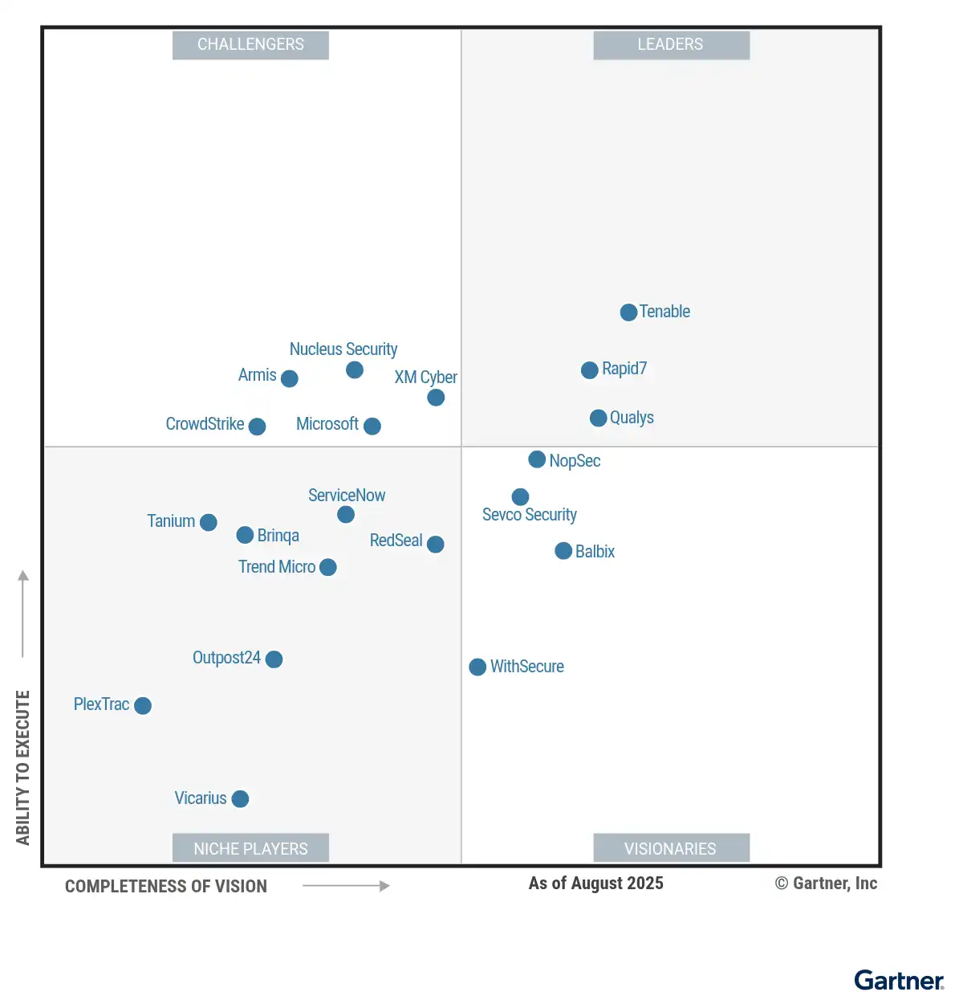

请访问原文链接：Gartner 暴露评估平台 (EAP) 魔力象限 2025 查看最新版。原创作品，转载请保留出处。
作者主页：sysin.org
Gartner 魔力象限：暴露评估平台 2025
Gartner Magic Quadrant for Exposure Assessment Platforms 2025
Published 10 November 2025

魔力象限
网络安全领导者必须定期评估整体漏洞和威胁暴露情况，这是安全架构和运营规划的重要输入。此研究帮助安全团队评估暴露评估平台供应商。
战略规划假设：
到2027年，整合暴露评估数据到IT和业务工作流中的组织，将比依赖孤立漏洞管理工具的组织，经历30%更少的由漏洞利用导致的计划外停机时间。
市场定义/描述：
这是《暴露评估平台魔力象限》的第一个版本，取代了《漏洞评估市场指南》。
暴露评估平台（EAP）持续识别并优先排序暴露风险，例如漏洞和配置错误，涵盖广泛的资产类别。它们本地交付或与发现能力集成，例如评估工具，这些工具列举暴露风险（如漏洞和配置问题），以增加可见性。EAP 利用威胁情报（TI）等技术分析组织的攻击面和弱点，并根据威胁环境、业务背景和现有安全控制的情况 (sysin)，优先处理高风险暴露。通过优先排序的可视化和修复建议，EAP 帮助提供行动方向，识别参与缓解和修复的各个团队。EAP 主要以自托管软件或云服务的形式提供，并可能使用代理进行暴露信息收集。
暴露评估平台（EAP）发现、分析并优先排序组织的暴露风险，例如漏洞、合规性差距、未管理的资产和资产配置错误，涵盖组织的攻击面，包括（但不限于）外部、内部、云端和终端用户。持续发现和清点攻击面，验证已知资产并发现未知威胁，是暴露管理程序的关键步骤，提供足够的可见性 (sysin)。为了改进优先级排序和处理工作，EAP将发现的暴露汇总并根据暴露严重性、资产关键性、业务影响、利用可能性和安全控制的上下文对其进行优先排序。结果会汇总到一个集中位置，以提高操作效率，并通过风险评分、趋势、统计数据和其他可视化方式（例如资产的可见性/可访问性、资产识别/所有权和修复跟踪）显示出来。EAP的核心目的是提供一个更好的、集中的高风险暴露视图，使组织能够采取关键的前瞻性措施，防止安全漏洞。
必须具备的功能：
该市场的必备功能包括解决方案能够：
- 本地交付或与发现能力集成，以揭示来自内部、外部、云端和终端用户攻击面的各种资产；并报告各种资产类型的暴露情况。资产来源包括终端、网络基础设施、本地基础设施、身份（例如，权限）、物理和虚拟主机、容器、物联网（IoT）和操作技术（OT），以及云平台和应用。
- 根据暴露的可访问性、可见性和可利用性优先排序已发现的问题。这包括应用资产上下文、威胁情报和安全控制上下文。
- 通过集成到更广泛的IT服务管理系统中，提供增强的资产上下文和报告，促进动员。
常见功能：
该市场的可选功能包括：
- 扩展发现能力，涵盖通过本地或第三方能力积极被外部威胁行为者利用的数字资产和这些工件 (sysin)。资产来源可能包括社交媒体、表面/深网/暗网和数字供应链。
- 通过API灵活性将其他非原生上下文摄取，优先考虑暴露风险的可访问性和利用可能性。这可能包括EAP解决方案执行攻击路径分析和/或获取来自对抗性暴露验证的数据/输出，例如破坏和攻击模拟（BAS）。
- 通过与IT风险管理、IT运营、安全运营解决方案（例如，安全信息和事件管理 [SIEM]、安全编排、自动化和响应 [SOAR]）和/或直接与控制（例如，安全姿态管理或自动化安全控制评估解决方案）集成，实现更快的修复或缓解。
- 通过集中化的汇总视图跟踪暴露的生命周期，支持自动化工作流。

领导者（Leaders）：
- Tenable
- Rapid7
- Qualys
挑战者（Challengers）：见图
有远见者（Visionaries）：见图
特定领域者（Niche Players）：见图
查看完整报告（限期公开）：https://www.gartner.com/doc/reprints?id=1-2MAMLMZF&ct=251113&st=sb
如何选择
主要技术市场上有哪些竞争参与者？他们如何为您提供长期帮助？Gartner 魔力象限是对特定市场的巅峰研究，可帮您广泛了解市场竞争对手的相对位置 (sysin)。利用图示法和一系列统一的评估标准，魔力象限可帮助您快速确定技术提供商执行其既定愿景的情况，并参照 Gartner 的市场观点了解其表现。
如何使用 Gartner 魔力象限？
面对特定投资机会考虑技术提供商时，请借助 Gartner 魔力象限迈出第一步。
请记住，专注于领导者象限不一定是最好的行动方案。有充分的理由考虑市场挑战者。特定领域者可能比市场领导者更能满足您的需求。这完全取决于提供商如何与您的业务目标保持一致。
Gartner 魔力象限如何发挥作用？
面对快速增长和提供商差异化明显的众多市场，Gartner 魔力象限用图形化方法划分出四类提供商：
- 领导者很好地执行了当前愿景 (sysin)，并为未来做好了充分准备
- 有远见者了解市场发展方向，或者有改变市场规则的设想，但执行效果不尽如人意。
- 特定领域者成功专注于一个小的细分市场，或者目标不明确，创新和表现未能超越竞争对手。
- 挑战者当前表现很好，或者可能在大部分细分市场占据主导地位，但未表现出对市场方向的了解。
相关产品下载
相关厂商的核心平台皆主推 SaaS 解决方案：
- Tenable One Exposure Management Platform - SaaS solution - 也支持本地部署
- Rapid7 Exposure Command Platform - SaaS solution - 支持本地和混合环境扫描
- Qualys Enterprise TruRisk Platform - SaaS solution - 可选个别场景本地部署
笔者 (sysin) 注：上述概念中 “暴露评估平台” 取代了 “漏洞评估”，这是一个更加全面和广泛的领域。此处下载的产品仅专注于传统的漏洞评估领域，并不代表相关核心能力。
Tenable：
Rapid7：
Qualys：
- 暂无
关于 EAP 定义
“暴露评估平台（EAP）能够在广泛的资产类别中持续识别和优先处理各种暴露点，例如漏洞和错误配置。它们能够原生提供或与发现能力集成，例如评估工具，以枚举诸如漏洞和配置问题等暴露点，从而提升可见性。” —— Gartner Peer Insights™
暴露评估平台（EAP）通常也被称为暴露管理平台或持续威胁暴露管理（CTEM）平台。Gartner® 创建了 EAP 这一术语，用来指代支持 CTEM 项目的一组特定工具。
“EAP 使用诸如威胁情报（TI）等技术来分析组织的攻击面和弱点，并通过结合威胁环境、业务以及现有安全控制等上下文，为高风险暴露点的处置工作确定优先级。通过优先级可视化与处置建议，EAP 有助于为行动提供方向，识别参与缓解和修复工作的各类团队。EAP 主要以自托管软件或云服务的形式交付，并可能通过代理程序来收集暴露信息。”

文章用于推荐和分享优秀的软件产品及其相关技术，所有软件默认提供官方原版（免费版或试用版），免费分享。对于部分产品笔者加入了自己的理解和分析，方便学习和研究使用。任何内容若侵犯了您的版权，请联系作者删除。如果您喜欢这篇文章或者觉得它对您有所帮助，或者发现有不当之处，欢迎您发表评论，也欢迎您分享这个网站，或者赞赏一下作者，谢谢！
 支付宝赞赏
支付宝赞赏  微信赞赏
微信赞赏赞赏一下
敬请注册！点击 “登录” - “用户注册”（已知不支持 21.cn/189.cn 邮箱）。 请勿使用联合登录（已关闭）。